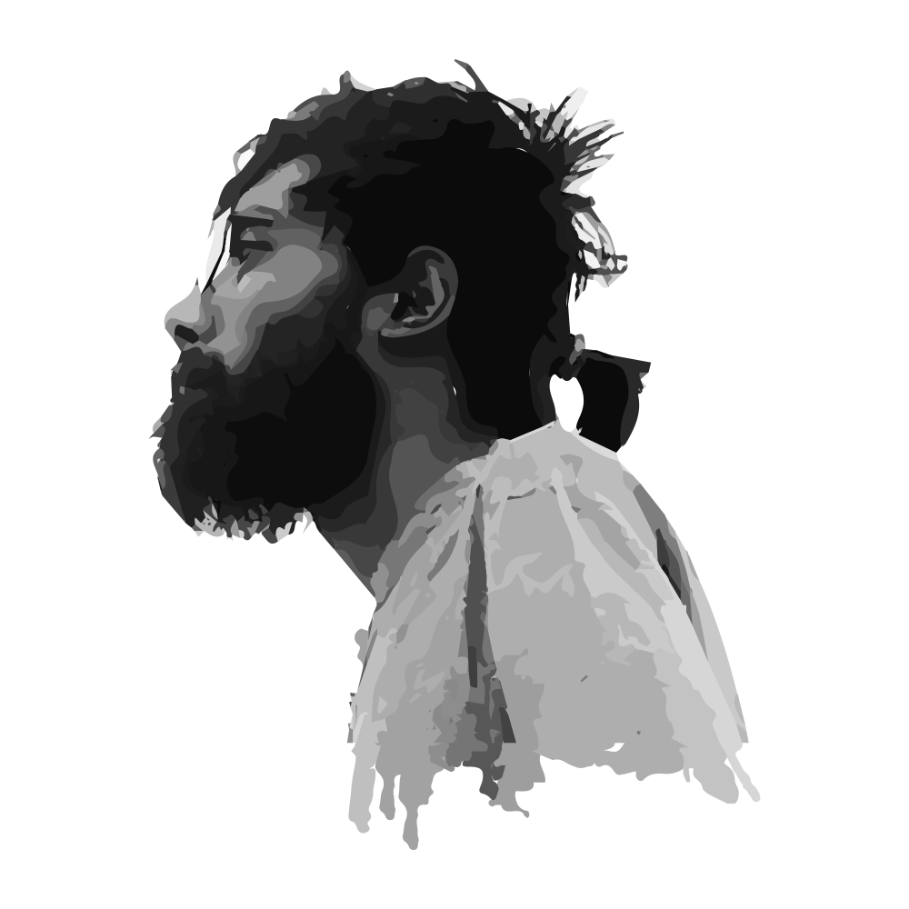

দুর্বুদ্ধির একশেষ
জাভাস্ক্রিপ্ট ছাড়া এইসব পৃষ্ঠার দর্শন পাওয়া যাবে না—
Loading...

হাসান নাহিয়ান নোবেল
শিক্ষার্থী, কম্পিউটার বিজ্ঞান ও প্রকৌশল বিভাগ
বাংলাদেশ প্রকৌশল বিশ্ববিদ্যালয় (বুয়েট)
কর্ম-অভিজ্ঞতার বিস্তারিত
লেখালেখি
© ২০২১-বর্তমান, হাসান নাহিয়ান নোবেল